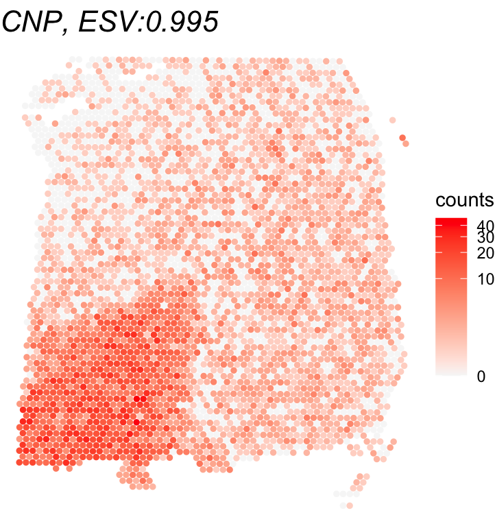

Example: Visium Human DLPFC
Source:vignettes/example_visium_human_DLPFC.Rmd
example_visium_human_DLPFC.RmdApplication of Spacelink to Visium Human DLPFC Dataset
This vignette demonstrates how to perform spatial gene expression
analysis using the spacelink package with Visium human
dorsolateral prefrontal cortex (DLPFC) dataset. The dataset is available
here, where we used
sample 151673. Cell-type proportions were estimated using RCTD with the CosMx
Human Frontal Cortex dataset as the reference. The processed example
data, saved as Visium_human_DLPFC, includes gene
expression, spot coordinates, and the estimated cell type
proportions.
Load example dataset
data(Visium_human_DLPFC)
counts <- Visium_human_DLPFC$counts
spatial_coords <- Visium_human_DLPFC$spatial_coords
dim(counts)
## [1] 33538 3639
dim(spatial_coords)
## [1] 3639 2Preprocessing
# Filter mitochondrial and low-expressed genes
counts <- counts[!grepl("(^MT-)|(^mt-)", rownames(counts)),]
counts <- counts[rowSums(counts >= 3) >= ncol(counts)*0.005,]
dim(counts)
## [1] 3309 3639
# Normalize expression counts using sctransform package
seurat_obj <- CreateSeuratObject(counts = counts)
seurat_norm = SCTransform(seurat_obj, vst.flavor = "v2", verbose = FALSE)
counts <- seurat_norm@assays$SCT$dataRun global Spacelink
# Here, we investigate eight example genes.
gene_list = c("CNP","SHISA5","PHB","HOPX","MOBP","EIF5B","SCGB2A2","YWHAE")
global_results <- spacelink_global(normalized_counts = counts[gene_list,],
spatial_coords = spatial_coords)
print(global_results)
## tau.sq sigma.sq1 sigma.sq2 sigma.sq3 sigma.sq4 sigma.sq5 phi1 phi2 phi3 phi4 phi5 raw_ESV time pval1 pval2 pval3 pval4 pval5 pval padj ESV
## CNP 0.0000000 0.00000000 0.7015934749 0.2179618252 0.000000e+00 0 0.001048406 0.0009286621 0.0008225946 0.0007286417 0.0006454196 0.994768081 4.999 0.000000000 0.000000000 0.000000e+00 0.000000e+00 0.000000e+00 0.000000000 0.000000000 0.994768081
## SHISA5 0.1500294 0.00000000 0.0004149912 0.0006837337 0.000000e+00 0 0.001703009 0.0013362057 0.0010484062 0.0008225946 0.0006454196 0.007209596 4.631 0.018972197 0.014445518 1.518510e-02 2.165076e-02 3.749959e-02 0.019186192 0.025581589 0.007209596
## PHB 0.1369763 0.00508862 0.0000000000 0.0000000000 0.000000e+00 0 0.007299270 0.0064655812 0.0057271124 0.0050729880 0.0044935748 0.026105641 4.189 0.118799139 0.110644681 1.091531e-01 1.136193e-01 1.235950e-01 0.114928890 0.131347303 0.000000000
## HOPX 0.1844922 0.00000000 0.0720213108 0.0766421489 2.561652e-03 0 0.001048406 0.0009286621 0.0008225946 0.0007286417 0.0006454196 0.448242916 4.147 0.000000000 0.000000000 2.611455e-312 5.377138e-281 2.750916e-250 0.000000000 0.000000000 0.448242916
## MOBP 0.0000000 0.00000000 0.4831314048 0.1345105327 0.000000e+00 0 0.001048406 0.0009286621 0.0008225946 0.0007286417 0.0006454196 0.994747311 4.422 0.000000000 0.000000000 0.000000e+00 0.000000e+00 0.000000e+00 0.000000000 0.000000000 0.994747311
## EIF5B 0.1113762 0.00000000 0.0000000000 0.0016466986 0.000000e+00 0 0.002766333 0.0021705050 0.0017030094 0.0013362057 0.0010484062 0.014321150 4.074 0.003477314 0.001992989 1.645165e-03 2.147440e-03 4.220251e-03 0.002381182 0.003809891 0.014321150
## SCGB2A2 0.0000000 0.13916786 0.7402986887 0.1394122051 0.000000e+00 0 0.001048406 0.0009286621 0.0008225946 0.0007286417 0.0006454196 0.994473609 4.939 0.000000000 0.000000000 0.000000e+00 0.000000e+00 0.000000e+00 0.000000000 0.000000000 0.994473609
## YWHAE 0.2485001 0.00000000 0.0011635764 0.0012691117 9.102338e-05 0 0.004493575 0.0039803394 0.0035257234 0.0031230316 0.0027663334 0.009273184 4.009 0.183838106 0.173973851 1.681146e-01 1.660988e-01 1.675962e-01 0.171708675 0.171708675 0.000000000Investigate global Spacelink result
# Number of significant SVGs
table(global_results$padj <= 0.05)
## FALSE TRUE
## 2 6
# Plot of the top SVG (highest ESV) and a non-SVG (lowest ESV)
gene_names = rownames(global_results)[c(which.max(global_results$ESV),which.min(global_results$ESV))]
print(gene_names)
## [1] "CNP" "PHB"
for(gene_name in gene_names){
df <- as.data.frame(cbind(spatial_coords, expr = counts[gene_name,]))
colnames(df) <- c('X0', 'X1', 'expr')
title <- paste0(gene_name, ", ESV:", round(global_results[gene_name,'ESV'],3))
print(ggplot(df, aes(x = X0, y = X1, color = expr)) +
geom_point(size = 1) +
ggtitle(title) + theme_void() + scale_y_reverse() +
scale_color_gradient(low = "grey97", high = "red", trans = "log1p", name = "counts") +
theme(plot.title = element_text(face = "italic", size = 20)))
}
Run cell-type-specific Spacelink
# Load cell type proportions
cell_type_proportions <- Visium_human_DLPFC$cell_type_proportions
dim(cell_type_proportions)
## [1] 3639 9
colnames(cell_type_proportions)
## [1] "endothelial" "L2_3" "L4" "L6" "oligodendrocyte"
## [6] "OPC" "astro" "Inh" "microglia"
# In this example, we examine the oligodendrocyte-specific spatial variability.
cell_type_results <-
spacelink_cell_type(normalized_counts = counts[1:5,],
spatial_coords = spatial_coords,
cell_type_proportions = cell_type_proportions,
focal_cell_type = "oligodendrocyte",
global_spacelink_results = global_results,
# The above is not required, though providing global results can improve efficiency.
calculate_ESV = TRUE)